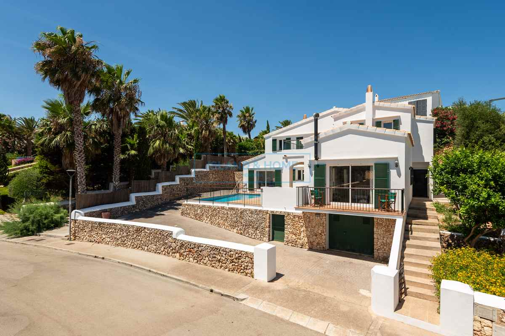

€895.000
Port d’Addaia, Es Mercadal, Menorca
Open the listingExact menorquina brief under €900k: traditionally designed villa with arched terrace dining, fireplace living, tiled private pool with marina views, BBQ side terrace and garage — short walk to Port d’Addaia. Old-soul architecture finished to a high standard.
Opened 7 Sep 2026. Asking €895,000. Specs: 3 bed / 3 bath / 248 m² / 527 m² + garage + furnished + fireplace + sea/marina views. Distinct from board addaya-92088 (Bonnin 4-bed / 235 m² / 985 m² with annex) and addaia-sea (E&V W-046NJ4).